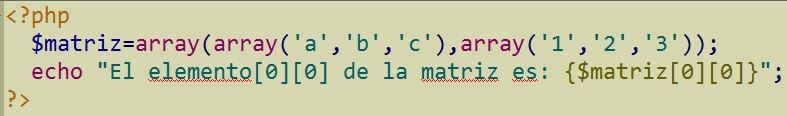
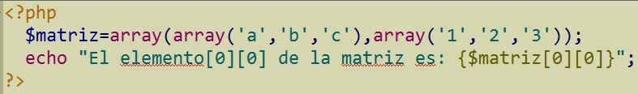

11. OPERADORES
Además de los operadores tradicionales PHP dispone de unos operadores de comparación específicos que no suelen aparecer en otros lenguajes:
| Operador | Nombre | Definición |
| $a === $b | Identidad | Cierto si el valor y el tipo de los operandos es igual |
| $a !== $b | No Identidad | Cierto si el valor o el tipo de los operandos es distinto |
El operador { } sirve para indicar al intérprete cual es la parte que debe procesar,
dentro de una cadena entre comillas dobles.
Se puede utilizar para visualizar matrices, funciones,
métodos de objetos, etc. dentro de cadenas de caracteres.
Vamos a ver un ejemplo con matrices, en el primer caso el parser se equivoca por la ausencia de llaves
y deja de procesar en los primeros corchetes:

 
